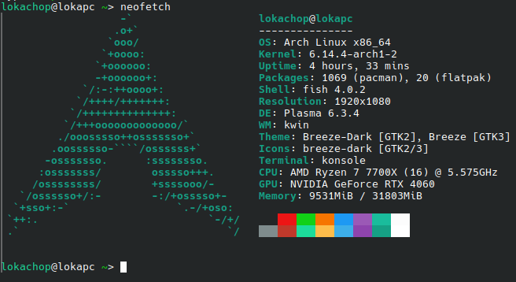

A week ago, I finally decided to move to Linux, since I've been planning to since I got my new computer around 2 years ago, here's my overall thoughts and experience with it
I was originally planning to use Debian 12 for my OS, but due to some weird GPU driver issues, I ended up switching to Arch Linux
I now know that the driver issues were caused by using the nvidia-open drivers instead of the nvidia drivers...
The lesson of the story is, don't buy NVidia if you plan to use Linux!
Installation
- I used archinstall, because I can't be asked to follow the ten-thousand steps to set up the OS while I could just follow a nice TermUI
- I set up a separate partition on a separate drive for my
/home folder, in case I ever want to distro hop to something else
- For the DE, I decided to go with KDE Plasma, since I've practically always used it even back in school! and because it feels the closest to Windows
- I initially used the
nvidia-open drivers, but later ended up using the nvidia drivers due to issues I'll mention later on
Initial Issues
- After first installing and properly booting, I had random freezing every minute or so, although audio kept playing
I'm not too certain as to how I solved it or why it kept happening, but I assume it was something GPU-driver related
probably caused by nvidia-open!, as it stopped when I installed the nvidia drivers instead
- Vulkan support was completely broken on the
nvidia-open drivers, which lead to games running under proton crashing near instantly
and to horrible graphical artifacts when running under OpenGL
- As soon as I installed the
nvidia drivers, my primary display would stay off unless it's refresh rate was capped under 120
I fixed this via switching out the cable from HDMI to DisplayPort which funnily enough, was giving me issues on Windows!
- My second monitor would freeze on the same frame until I reconnected it very rarely it only happened once while playing AnIV
I still don't know why it happened, and it has not happened ever since
Stuff I Miss
- Holding down MMB to scroll with the mouse, thankfully, Firefox has support for it! just enable autoscroll in settings
- ShareX, there are very good alternatives but I mostly miss the other tools ShareX provided, like screen colour picking and GIF recording
- Random Windows-only tools like Wavosaur, Thankfully, this isn't a problem thanks to wine!
- One or two games that used bad anticheat solutions that don't support Linux (GTA V Online)
Stuff I Find Better
- Memory usage, you compare it to Windows and the difference is absurd!
At the moment of writing this, I have Discord, Firefox, VSCodium, npx http-server and Steam open, and it's only using 6GiB!
Meanwhile, my old Windows install would idle at 8GiB+
- The package manager, the fact that Windows doesn't have anything similar is pretty sad, it is one command to get most if not all programs!
I guess the only confusing part of it is the divide of AUR packages and normal pacman packages
- Updates are simpler to install, and you're not forced to install them until you ACTUALLY want them
- Building programs is way simpler and less of a nightmare than on Windows
- The shell doesn't feel like an afterthought, it actually feels nice to use, more so if you use a custom shell like fish!
Stuff That Surprised Me
- Most if not all games that I play work without any sort of hard work to set up!
I would personally say the best candidates are Space Station 14 and Minecraft
Proton also contributes A LOT to this, making 99% of Windows-only games work perfectly!
- The amount of guides and tutorials is surprising, I was expecting finding help very hard!
- 99% of the software I already was using is here too!
Afterthoughts
Even if the process has been bumpy, i'm still really thankful to be off Windows now, it is something I have always been meaning to do but
never really got to due to fearing data loss, thankfully thanks to a recently obtained NAS that is no longer a concern!
I'm also really happy to see more developers taking Linux support seriously thanks to the Steam Deck, specially Valve!
and here's the mandatory neofetch
